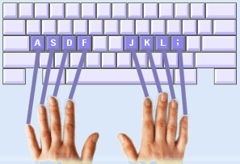

How to adjust it?
Open the Settings page and find the Key Hint Speed
Choose between Normal, Fast, or Instant depending on how quickly you want the keyboard hints to appear.
Faster hints can help you learn key locations more quickly, while slow hints encourage you to recall keys on your own.
Tip: Start with Normal and switch to Fast later.